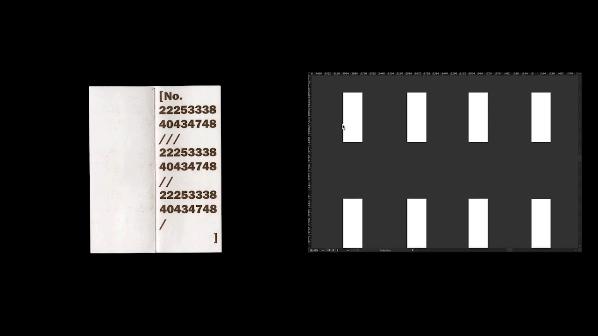

The order, the labor and in the end we all become to the cyborg. Living in this digital era, the way we work with machine pushes us becoming to a cyborg. The realtionship of labor between machine and me created and build The Order books. Who is labor? Who is machine...
The order 项目将机械从数字输入到图像形成再到最后的产品对应输出的过程视觉化，人力化。我将大众随意写给我的数字，输入电脑设计工具中，并输出任意的视觉图形，并将其装订成册。从接受信息，到和机械公共工作并转化信息的人物不同身份中不断切换。在机械和人工共同工作的工作中，人工是否成为机械的一部分， 而机械是否又成为人工的一部分呢？Cyborg又该如何解读？
✿ The order VR space ✿

The Order VR Space, build by Unity and Maya.
Nov. 2019
“When you enter this order space, you are one of us.”
The Order VR Space is an exploration of media publication of the Order Book project. I used Maya and Unity to build a virtual reality world. The models are from the conversation of each 2D image of order books. If you click on each model, the sound will play on the number of the model, which is from each order sheet. “Click” and “Touch” are the gesture language from humans relating to the machine reaction. This piece discusses the function of human and machine. The machine reacts because of the participation of humans. We become a part of the device working, and the computer becomes a part of us.
✿ The order & Labor & Cyborg Installation ✿

The order & Labor & Cyborg, multimedia installation, third floor, Fine Art Building, Fishbowl Room, VCUarts, Richmond, VA, Nov.2019.
300 cm x 160 cm oversize printed paper, three iMacs, 30 The Order books (11 inches x 4.25 inches)
The Order & Labor & Cyborg is an installation of The Order project. It describes the research between input and output of machine production. This installation contains 30 Order books, three iMacs, and one oversized frame paper. It starts from people who spoke out the number from the first iMac, and then the second iMac presented the processing of design in machine. Thirty produced order books contribute the third part, and the third iMac showed the interactive of VR space containing all of the 3D models which converted from each 2D image of each book. Clicked on each 3D models to turn each sound lead back to the first iMac. It is a circle contribution during this input and output machine working.
✿ The order book ✿



The Order book, 10 books, Size: 11 inches x 4.25 inches, binding with sewing machine. Oct. 2019
The Order Book describes the labor relationship between humans and machines, which connects to the visual language of machine humanities. Each image creates in blend tool and shape tool in Adobe illustrator. The number and option of each shape and blend are from the order sheet, which I hand out to ten people. They write down any random number on that sheet and return to me. Then I produced ten different books for them and binding the book by sewing machine. During this work process, numbers transfer images, words tracing the shape of pictures on each page. In this work, I am into the beautify of machine production and visual transformation between numbers and forms.